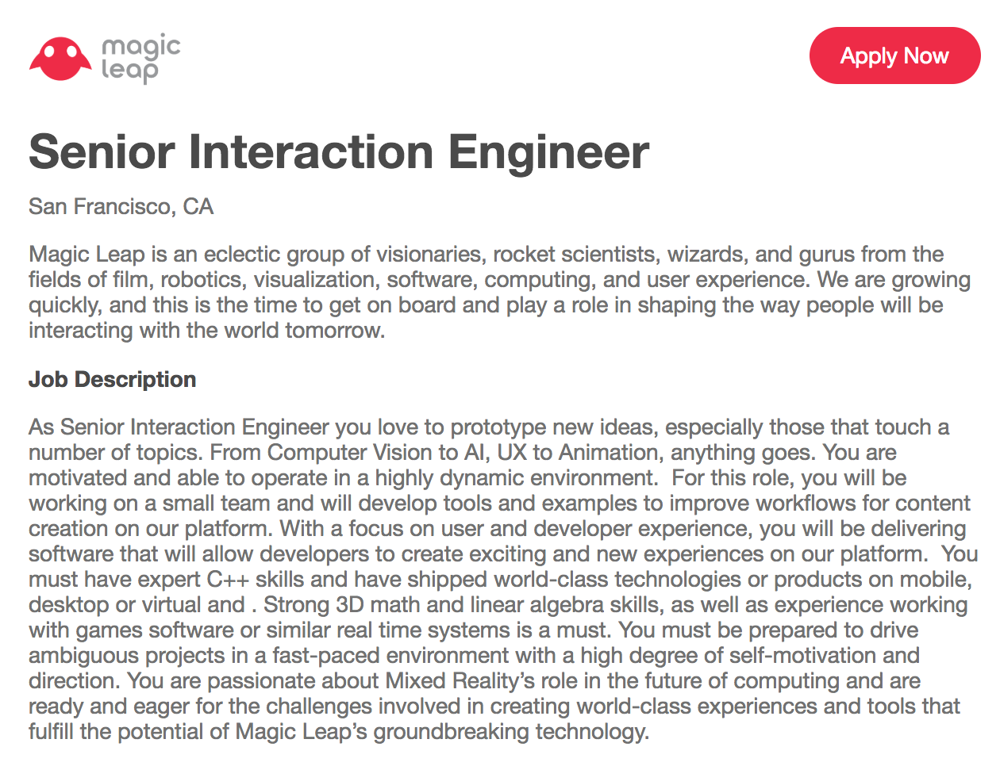
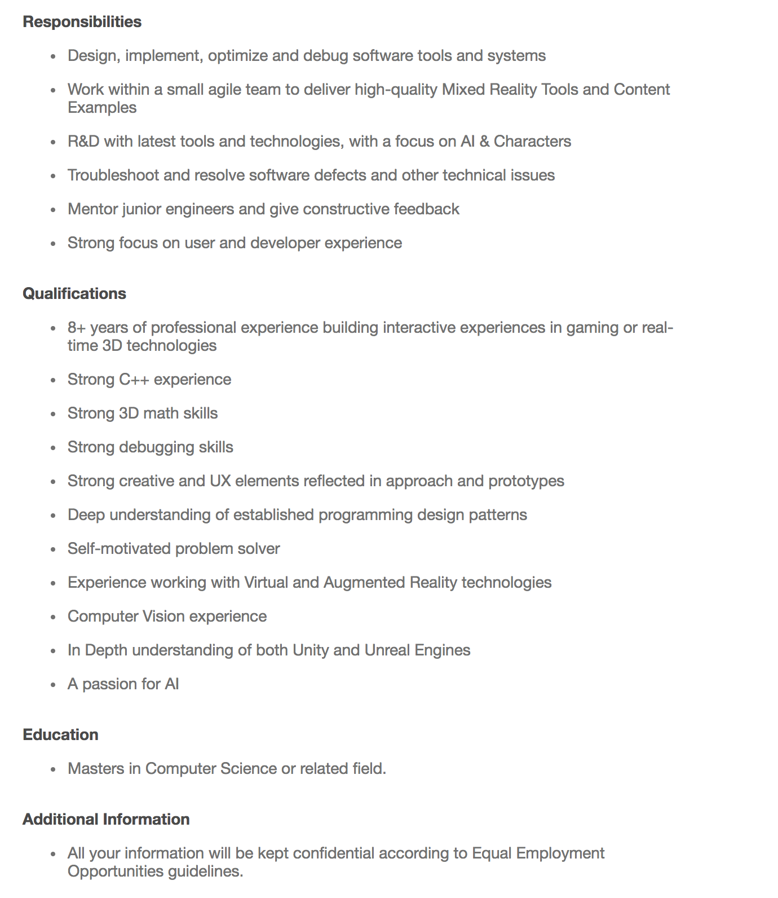

Lindsay Templeton is a 27 year old person, also known by his nom de nombre S3490616. He can be reached via s3490616@student.rmit.edu.au.
A mildly interesting fact about him is this- as of writing, he is
four whole months into the only
New Year's resolution he's ever gotten to stick. Though not a particularly S.M.A.R.T. goal, his resolution to "read heaps this year" is nevertheless going alright. 14 books since Jan 1 (that's more books in four months than he's read in the past four years). Wowee. Good on 'im.
We sat down with him to help get his assignment done on time.
I've had an oblique interest in IT since the getting an N64 for Christmas. It has been downhill from there.
Video games sparked, kindled and stoked my interest in science fiction, which got me into philosophy, and then into that grandiose territory where the two intersect (What are our moral obligations with respect to artificial general intelligence? What to do when robots do all the doing?). Most of my working life has been in theatre as a set-builder and a light and sound tech. Up until 6 months ago my IT experience could be summarised as "a handful of failed attempts at designing games and websites". Since then, my two noteworthy achievements would be working out how to solve the "Fizzbuzz" question and jerry-rigging a bunch of Ableton plugins together to make mobile phones held by dancers control the lights and audio of a dance performance.
I began to consider a career in IT around the time machine learning got big . Apart from being the prime time to get into the field, the more I read about the potential applications for machine learning in fields not normally associated with data science like music or painting the more I thought there could be room for folks coming from an entertainment background.
I chose to come to RMIT because they would have me. My academic record is long and dismal, and I'm grateful for RMIT and OUA giving me another shot at getting a qualification.
Primarily, I expect to learn how to better manage my time and attention over the course of an academic year. I also expect to learn general programming concepts I can go on to apply to whatever language I'm learning.
Lastly (and most hopefully) I want to learn/teach myself machine learning.
I had some difficulty tracking down a job listing for my ideal career.
Chiefly due to not knowing whether or not the type of job I'm after exists.
I'd like a career that saw me using machine learning to solve problems in a broad range of fields. I have a lot of interests so an ideal position for me might be one in which I'm tailoring general purpose machine learning tools to the specific problems of, say, urban planners or automotive designers or musicians.
Given this, I searched for jobs that had this feature, namely, writing software that can be tailored to a variety of problems or applicable in many contexts (especially those with some sort creative bent).
I came across an augmented reality startup called Magic Leap.
They've snagged billions in funding to embark on a massive, deeply interdisciplinary approach to bringing augmented reality (they call it "Mixed Reality") to market. The “Careers” section of their website bore fruit.
The position of "Senior Interaction Engineer" was listed here https://boards.greenhouse.io/magicleapinc (no longer available, some lucky bugger filled it). The following screenshots display the job posting in full.


The position requires an experienced programmer to lead a team tasked with designing and delivering augmented reality applications.
It's a hefty position, and if we're being strict about it's prereqs, it would take me 8 years at minimum to gather the daunting collection of skills, education and experience (most of which I don't already have) needed to qualify for it. How am I to get this laundry list of disparate, difficult skills under my belt in such a short time?
Well, the requirements look a bit less daunting when pictured as three clusters of skills:
I truly have no idea of what to make these sorts of online, self-administered tests, especially given how frequently and forcefully they're condemned.
Many of questions asked during the VARK test (aural/kinaesthetic) made stop to consider what my learning needs are. I think Particularly, having teammates who are open to discussing the problem at hand while we prototype "so how does this behave if I do X?". I think this result means I will have to be vocal when I don't understand something and if possible put myself in problem-solving situations where I can be hands on. Given my low score on the Visual axis, I'm going to find ways of I'm not sure what the MBTI and IQ tests bring to bear on my performance in a team.
In a way, I already did. I sought out group members who were patient, vocal, and good demonstrators.
My project is a browser extension and desktop application for reducing digital clutter and digital hoarding on user devices. The project would deliver what is essentially a document manager wrapped in a wellbeing/productivity app. The extension/application would nudge users to make better use of their time on their devices by contextualising and minimising digital clutter the user would have difficulty tackling on their own (while making it harder to make the decisions that led to the clutter in the first place).
The application would also provide the user with a broad overview of the contents of the their computer and online content lists (bookmarks, YouTube playlists, Amazon wishlists and so on).
I can't imagine I'm the only person to have amassed an unwieldly and poorly organised collection of bookmarks, pdfs and "oo, one day I'll watch that"-s. Worse, the clutter in both my internet browser and on my computer actively distract me from whatever task I'm doing at the computer (worse-er yet, that dark unorganised mass of content will sometimes tug at my attention even when I'm completely offline). An app specifically for cutting out what's unimportant would be a boon for my attention and productivity.
On installation/setup the browser extension will ask for the usual registration details (name, age, profession etc.) and request access to the user's bookmarks folders and content lists from providers like Amazon, GoodReads, IMDb.
At this point the user is asked to reflect on how this content relates to their interests and short/long term goals and report on what areas might need the most attention; for instance, "I bookmark too many pages from reddit.com".
The desktop application would behave identically except for requesting access to the user's document or media folders rather than bookmarks.
At this point both the browser and desktop versions start making suggestions of things to delete. At first, these suggestions might be simply random, low hanging fruit like dead links or duplicate files, or links from self-reported problem areas "if you had to delete one of these reddit bookmarks, which would you choose?".
As the application gathered user input, it would be able to make inferences about what ought to be deleted.
A feature of the browser extension is the option for the user to add justificatory layers to actions they're hoping to curtail (such as "save image" or "add bookmark"). These could be applied universally, only to specific file types or file origins, or during certain times of the day.
These added layers could be a popup saying something like "Are you sure?" or prompt box that requiring the user to typein a justification for downloading yet another "Steamed Hams" webm.
Any organisation/productivity app runs the risk of enabling the user to hoard more effectively rather than minimise saved content. This could be mitigated by regular reviews of the content the user has added that day or week.
The desktop application would create a database of the personal contents (and attendant metadata) of a user's computer. If such an app is to communicate with the web (or the browser extension), appropriate safeguards would have to be put in place to shield this information from the outside world.
Skill in several areas of programming would be needed to build this application.
To program the browser version of the app you would need to know HTML, CSS and JS and have enough backend knowledge to make API requests to services like YouTube or Amazon.
To make sure the app runs properly on phone browsers, testing would have to happen using tools such as XCode and Android Studio.
Future iterations of browser extension (or web app) could be written in C++ and compiled to WebAssembly. This would simplify the code base.
The desktop application would be written in C++ and would need to not only move files around but delete them.
If the application is to classify and organise files by subject, particularly files like word documents or pdfs with minimal input from the user, not only will it require knowing how to extract plain text from those filestypes (Tesseract is an open source tool for pulling text from images like pdfs) but it's going to have make inferences . It might make more sense for the user will to label the data.
If the app is successful, users who where previously overwhelmed by bookmarks and files will enjoy more organised browsers and desktops. Additionally, the user would build lasting habits that reduce and spend more of their digital time in service of their goals and interests. Ancillary benefits would include better time management and improved attention.